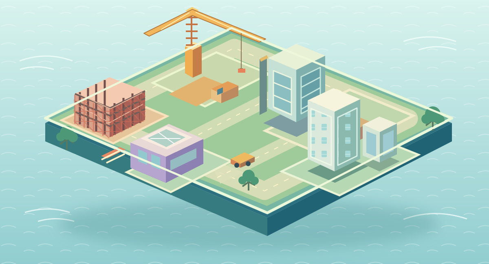

⌂
工程監造島
CONSTRUCTION CONTROL ISLAND
CONSTRUCTION CONTROL ISLAND
FIELD GUIDE / 2026
把工程，監造起來。
一座為工程人打造的互動工作島。從圖說、現場到驗收，讓每一個查驗點都有紀錄，每一條協作線都找得到。
一格監造，一條追蹤線今天先從現場最重要的節點開始，將品質、安全、進度與文件串成同一張工程地圖。
工程全景
俯瞰工程基地，點選建築旁的站點探索監造工作

AXONOMETRIC SITE MAP · 01
示意場景 · 點選站點探索監造流程
需處理排程中已完成
今日監造任務
把現場觀察，變成可交接的下一步。
3F 鋼筋綁紮查驗結構工程 · 需拍照與量測紀錄
待處理施工架與開口防護巡查安全衛生 · 今日 09:30 前完成
排程中核對第 12 版送審圖文件管理 · 等待專任工程人員確認
協作中地下室混凝土澆置紀錄進度管理 · 已完成現場簽認
已完成工程日誌
讓每個決策，都留下可以回看的時間軸。
監造計畫更新：新增防水查驗點
依現場會議決議，將屋頂防水層、落水頭與收邊納入下一階段查驗。
承商回覆：材料送審補件完成
鋁窗樣品與性能證明已補齊，狀態由「退補」轉為「待核定」。
現場會勘：B1 機電管線衝突
已建立協作線，通知機電與結構團隊進行套圖檢討。